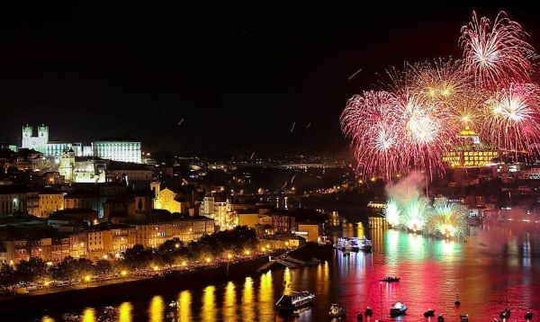

Welcome to Porto Chamber of Commerce Website
Current Event
The Feast of São João is the most important festival in the city of Porto, as it celebrates the feast of Saint John, the patron saint of the city. For this reason, São João is the most venerated saint in Porto and the whole city is decked out with music, dance and fireworks to welcome the summer solstice. The Festas de São João in Porto last several days. For example, São João 2024 is celebrated from 7 June to 30 June, with the most important days of the celebration being 23 and 24 June. Above all, the night of the eve of St. John’s Day, around midnight, is the highlight of the Festas, when the sky fills with light and colour to celebrate the definitive entry into the summer season.
Weather
Today's Weather
Porto, Portugal